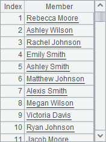

3.1.2 Creating a sequence based on existing data
The loop function A.(x) can also be used to generate data using an existing sequence, table sequence or record sequence. Here we¡¯ll discuss its uses and compare it with A.new(). For example:
|
|
A |
|
1 |
$(demo) select * from EMPLOYEE |
|
2 |
=A1.(NAME+" "+SURNAME) |
|
3 |
=A1.( age(BIRTHDAY)) |
|
4 |
=5.([~,~*~,~*~*~]) |
Results of A2 and A3 are as follows:
 
The results are sequences instead of table sequences. According to this, generally the loop function A.(x) generates a single piece of data each time.
To get multiple data at a time, use the code in a similar style as A4¡¯s. The result will be a sequence whose members are also sequences. Below is A4¡¯s result:

When determining an equivalence relation, we can use case function to replace if function, such as if(GENDER=="M","Male") can be written as case(GENDER, "M":"Male").